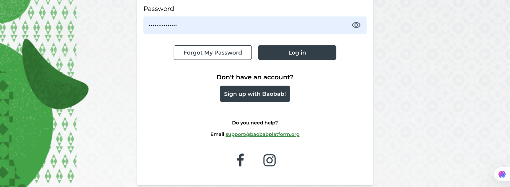
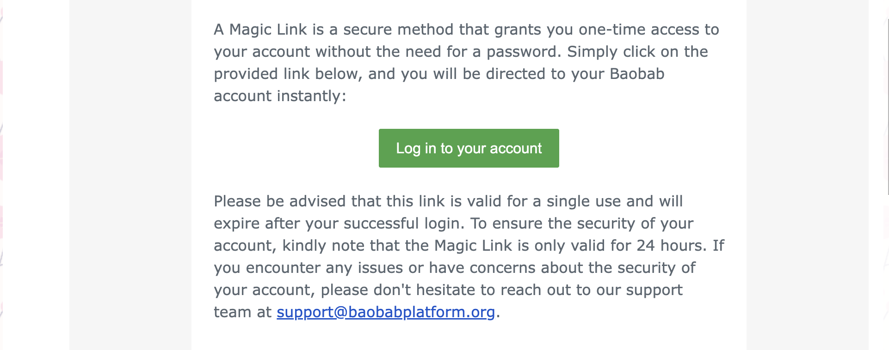
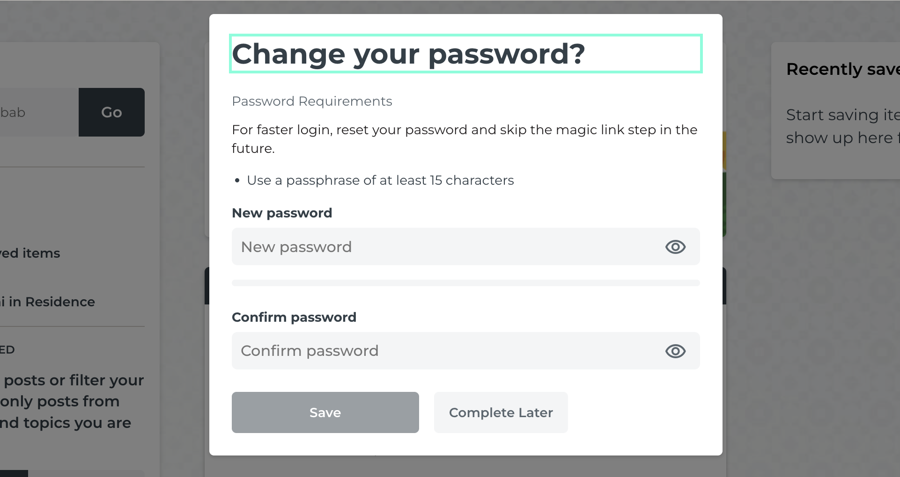

1
Open the Baobab login page
Go to Baobab, select Log in, then scroll down and select Forgot My Password.

2
Choose how to reset your password
You can reset your password using the email address or phone number associated with your Baobab account.
3
Reset by email
Enter the email address associated with your Baobab account and select Request One Time Magic Link. Check your Spam or Junk folder if the email does not appear.

Didn't receive the reset email? Check your Spam or Junk folder and confirm that you entered the email address associated with your Baobab account.
Avoid requesting multiple reset links. Requesting a new link may invalidate the previous one.
Avoid requesting multiple reset links. Requesting a new link may invalidate the previous one.
4
Open the reset link
Open the email, select Reset Password, and follow the on-screen instructions to create a new password.

5
Or reset by phone number
Select your country, enter the phone number associated with your Baobab account and select Reset Password. Open the link sent by SMS to change your password.
Still need help?
If this did not solve the problem, tell Support what you're experiencing.
Contact Support